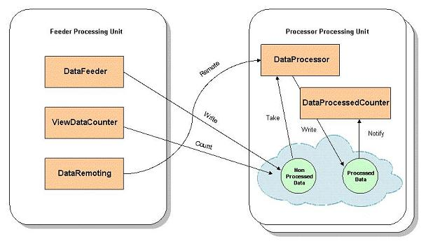

Section Summary: This example gives an extensive overview of the OpenSpaces APIs, the Processing Unit concept and the configuration options in the sla.xml and pu.xml files. The example contains two Processing Units; one that feeds data objects into the system, and another that reads those objects and processes them.
Overview
| The example is located under <GigaSpaces Root>/examples/data |
| Note for community edition users The example uses a clustered space topology which is not supported in the community edition. To run the example with the community edition you will have to modify the SLA of the processor processing unit to run a single space. Please refer to this page for more details on how to configure a processing unit's SLA |
The purpose of this example is to show many of the capabilities of GigaSpaces XAP and its mainstream APi, namely OpenSpaces. The example uses the following features:
- POJO Annotations
- The GigaSpace class
- Declarative transactions
- Event containers (polling and notify containers)
- OpenSpaces remoting
- OpenSpaces clustering and SLA
- Using the JMS MessageConverter feature that writes POJOs to the space using the JMS API
This example shows a PU that contains several services that are independent of each other and serve different purposes within one application. Moreover, the example show how different processing units use the space to share data.
Architecture
This example includes two modules that are deployed to the service grid, and a domain model that consists of the Data class (shared between two modules). Each module runs within a processing unit, one runs the DataFeeder bean, the JMSDataFeeder bean and the DataRemoting bean, all write Data instances with raw data into the remote space. The space is actually embedded within the second processing unit, which runs the DataProcessor bean. The DataProcessor service takes the new Data objects, processes the raw data and writes them back to the space. Both processing units run additional services that interact with the space or with the other services, either in via a polling container, a notify container or via GigaSpaces remoting support.
The entire application looks like this:

Application Workflow
- The DataFeeder writes unprocessed Data objects into the space every second.
- The JMSDataFeeder uses Spring's JmsTemplate over GigaSpaces JMS to write unprocessed Data objects into the space every second.
- The ViewDataCounter performs a count operation on the space every second to count all of the Data instances (processed and unprocessed).
- the DataRemoting performs direct remote calls on the DataProcessor service.
- The DataProcessor takes unprocessed Data objects, processes them and writes them back to the space.
- The ProcessedDataCount receives notifications of processed Data objects that are written or updated in the space. Notifications are configured to arrive in batches of 10 objects or every 5 seconds.
 The services described above are independent of each other. They are merely explained here to show the various capabilities of GigaSpaces XAP and the OpenSpaces API.
The services described above are independent of each other. They are merely explained here to show the various capabilities of GigaSpaces XAP and the OpenSpaces API.
The POJO Domain Model
The only object in our model is the Data object.
@SpaceClass public class Data implements Serializable { public static long[] TYPES = {1, 2, 3, 4}; private String id; private Long type; private String rawData; private String data; private Boolean processed; [..] @SpaceId public String getId() { return id; } /** * The type of the data object. Used as the routing field when working with * a partitioned space. */ @SpaceRouting public Long getType() { return type; } [..]
Note the annotations that are used in this object:
- @SpaceClass – the marked object can be written to a space.
- @SpaceId – marks the id attribute of the Data class as the unique identifier of this class. Each instance of Data should have a unique ID value.
- @SpaceRouting – when using a partitioned cluster topology, Data objects are routed to the appropriate partitions according to the specified attribute, in this case type (this means that two instances with the same value for this field will end up in the same partition).
Basically, every Data object is written to the space by the DataFeeder or by the JMSDataFeeder with the processed value set to false, and this value is later set to true by the DataProcessor.
 Even though our object implements Serializable, it doesn't have to in all cases. This is relevant only when the Data object is used as a parameter in remote calls.
Even though our object implements Serializable, it doesn't have to in all cases. This is relevant only when the Data object is used as a parameter in remote calls.
POJO Services and Wiring with Spring
According to the diagram above, there are 5 different services in our application, each is independent of the others and performs different actions as detailed below.
DataProcessor
The data processor is implemented in the class rg.openspaces.example.data.processor.DataProcessor.
It is configured in the pu.xml file of the processor module.
The most interesting part of the DataProcessor class is the processData() method. Note that it is marked with the @SpaceDataEvent annotation. This annotation marks the method to be called whenever a Data object that matches our criteria is available for processing (in our case, change the processed attribute to true) and write the object back to the space.
You might also have noticed that the DataProcessor implements IDataProcessor. This simple interface is used to expose the DataProcessor to remote clients via space based remoting. In our example, as you can see in the diagram above, the DataRemoting service which is part of the processor processing unit, makes a remote call to the DataProcessor which is located in the processor processing unit (which runs in another process, or even another machine). This is exactly why our Data object is Serializable.
The event processing aspect of the DataProcessor is enabled using GigaSpaces polling container.
The polling container is created since the DataProcessor class is annotated with @Polling annotation. The value returned from the method annotated with the @EventTemplate annotation will be used as the template for the polling container, i.e. the polling container will use it in the take operations it does periodically. This means that it will determine the criteria of the Data objects to be processed (in this case with the processed attribute set to false.
Note the the pu.xml file of the processor module contains the <context:annotation-config/> and <os-events:annotation-support/> tags to instruct the infrastructure to look for classes annotated with @EventDriven and @Polling and create polling container for them. Also note that @TransactionalEvent annotation which means that event will automatically be processed under a new transaction which will commit unless an exception is thrown.
DataProcessedCounter
The DataProcessedCounter is a service that is also part of the processor module. It also contains a method that is marked with the @SpaceDataEvent annotation. However, there are two differences between the DataProcessedCounter and the DataProcessor. The minor difference is that the DataProcessedCounter processes Data objects with the processed attribute set to true (meaning objects that were already processed by the DataProcessor and written back to the space).
The bigger difference is that unlike the DataProcessor, which takes objects from the space to the processes them, the DataProcessedCounter is notified whenever these objects are written to the space or updated in the space. Moreover, instead of receiving the events one by one, the DataProcessedCounter receives batches of events that can be based on the number of objects, interval in milliseconds, or both:
This is expressed in the following annotations:
@EventDriven //Event notification mechanism @Notify //batching behavior @NotifyBatch(size = 10, time = 5000) //notify for write and update operations @NotifyType(write = true, update = true)
Similar to the polling container, the @EventTemplate annotation is used to annotate the method which returns the template for the notify registration.
Unlike the DataProcessor, which defines the template in the form of a Data instance, the DataProcessedCounter defines a SQLQuery, using the class type and and the WHERE clause of the query. The SQL query is equivalent to the way we defined the template, and either can be used (although the SQLQuery allows more flexibility since it support OR, greater than and less than semantics.
As with the polling container, the pu.xml should include the <context:annotation-config/> and <os-events:annotation-support/> tags (it's enough to specify them once for the entire processing unit, regardless of the number of actual event containers in your processing unit)
 Note that code only contains the implementation of the counter. Everything else is configured through annotation (or alternatively can be configured via XML), which means you can change the event-handling mode without changing the handling code.
Note that code only contains the implementation of the counter. Everything else is configured through annotation (or alternatively can be configured via XML), which means you can change the event-handling mode without changing the handling code.
DataFeeder
The DataFeeder class belongs to the feeder module, and is configured as a Spring bean that repetitively (every one second) creates new Data objects with one of the four types (1, 2, 3 or 4), sets the processed value to false, and writes them to the space:
Code
public class DataFeeder { [..] Data data = new Data((counter++ % numberOfTypes), "FEEDER " + Long.toString(time)); data.setId(startIdFrom + counter); data.setProcessed(false); gigaSpace.write(data); [..]
Configuration
<bean id="dataFeeder" class="org.openspaces.example.data.feeder.DataFeeder"/>
The gigaSpace member is an instance of GigaSpace – which represent the client side proxy to the space. Note that the instance is injected to the DataFeeder in a declarative manner:
Code
@GigaSpaceContext(name = "gigaSpace") private GigaSpace gigaSpace;
Configuration
<!--
Enables the usage of @GigaSpaceContext annotation based injection.
-->
<os-core:giga-space-context/>
<!--
A bean representing a space (an IJSpace implementation).
Note, we perform a lookup on the space since we are working against a remote space.
-->
<os-core:space id="space" url="jini://*/*/space" />
<!--
OpenSpaces simplified space API built on top of IJSpace/JavaSpace.
-->
<os-core:giga-space id="gigaSpace" space="space"/>
In the Configuration tab above, we show how to define the space with its URL, and then define the GigaSpace instance which is based on that space. In this case, the space URL points to a remote space location (this is because the space is located within the DataProcessor Processing Unit, which is remote to the Processing Unit in which DataFeeder is running). This approach not only allows you to easily configure the application, but also to completely change the GigaSpace functionality implementation, without changing the code of your original application.
Because the DataFeeder includes JSR-250's @PostConstruct and @PreDestroy annotations, its annotated methods (construct() and destroy()} are called when it is created and destroyed, respectively.
JMSDataFeeder
The JMSDataFeeder is similar to the DataFeeder. The difference between the beans is that the JMSDataFeeder uses Spring's JmsTemplate on top of the GigaSpaces JMS implementation to write the Data objects to the space; no space API is used directly. This is possible due to the usage of a MessageConverter that converts JMS messages into any required POJO type, in this case, Data. In this example, we configure the ConnectionFactory to use the ObjectMessage2ObjectConverter that comes with the GigaSpaces JMS implementation. The ObjectMessage2ObjectConverter receives a JMS ObjectMessage and returns the message's content (body) as the object to write to the space. The JMS ObjectMessage itself, including headers, properties etc., is not written. The JMSDataFeeder uses Spring's JmsTemplate and MessageCreator to send ObjectMessages that contain the Data objects, and the converter makes sure that only the contained Data objects are written.
Code
public class JMSDataFeeder { [..] Data data = new Data(Data.TYPES[counter++ % Data.TYPES.length], "FEEDER " + Long.toString(time)); data.setProcessed(false); jmsTemplate.send(new MessageCreator() { public Message createMessage(Session session) throws JMSException { return session.createObjectMessage(data); } }); [..] }
Configuration
<bean id="jmsDataFeeder" class="org.openspaces.example.data.feeder.JMSDataFeeder"/>
The JMSDataFeeder is injected with a Spring JmsTemplate. The JmsTemplate is injected with a JMS ConnectionFactory and a destination of type Queue. Unlike the DataFeeder, the JMSDataFeeder does not declare an instance of GigaSpace. GigaSpace is injected into the ConnectionFactory bean and is used behind the scenes by the JMS layer. In addition, the ConnectionFactory is injected with a MessageConverter of type ObjectMessage2ObjectConverter.
Code
public class JMSDataFeeder { [..] /** Sets the JmsTemplate */ public void setJmsTemplate(JmsTemplate jmsTemplate) { this.jmsTemplate = jmsTemplate; } [..] }
Configuration
<bean id="jmsDataFeeder" class="org.openspaces.example.data.feeder.JMSDataFeeder" depends-on="gigaSpace"> <property name="instanceId" value="${clusterInfo.instanceId}" /> <property name="numberOfTypes" value="${numberOfTypes}" /> <property name="jmsTemplate"> <bean class="org.springframework.jms.core.JmsTemplate"> <property name="connectionFactory" ref="connectionFactory"/> <property name="defaultDestination" ref="destination" /> </bean> </property> </bean> <!-- The JMS ConnectionFactory used by the JMS feeder --> <os-jms:connection-factory id="connectionFactory" giga-space="gigaSpace" message-converter="messageConverter" /> <!-- The MessageConverter used by the JMS layer to convert JMS message to any POJO/s before sending. --> <bean id="messageConverter" class="com.j_spaces.jms.utils.ObjectMessage2ObjectConverter" /> <!-- A JMS destination used when sending messages --> <os-jms:queue id="destination" name="MyQueue" />
Because the JMSDataFeeder includes JSR-250's @PostConstruct and @PreDestroy annotations, its annotated methods (construct() and destroy()} are called when it is created and destroyed, respectively.
ViewDataCounter
The ViewDataCounter is a simple service that performs a count operation on the space every second.
Note that the ViewDataCounter is configured in the same pu.xml file as the DataFeeder, however, there is one major difference in how the two services connect to the space. The DataFeeder uses a GigaSpace instance to access the space remotely, while the ViewDataCounter uses a different instance – a local view of the space. A local view is like a local filter defined in the client side that registers for specific templates. Every object that is written to the space or updated in it that matches the template is immediately sent to the local view of that client. This way, different clients can keep different local caches according to their interests, and gain in memory read speeds.
In this example, the ViewDataCounter is interested only in processed Data objects, so it defines a local view with a template and uses a GigaSpace instance that uses the local view.
Because the ViewDataCounter includes JSR-250's @PostConstruct and @PreDestroy annotations, its annotated methods (construct() and destroy()} are called when it is created and destroyed, respectively.
DataRemoting
DataRemoting demonstrates the remoting capabilities of OpenSpaces, using the space as the transport layer for the remote calls.
Implementing a remote service is quite straightforward, you just need to expose your remote interface and add the proper configuration. In our example, we want to be able to access the DataProcessor remotely, so we added the IDataProcessor interface. DataRemoting only uses IDataProcessor, and is completely unaware to the underlying space.
Code
[..] @EventDrivenProxy(gigaSpace = "gigaSpace", timeout = 30000) private IDataProcessor dataProcessor; [..] Data data = new Data((counter++ % numberOfTypes), "FEEDER " + Long.toString(time)); data.setProcessed(false); System.out.println("--- REMOTING PARAMETER " + data); dataProcessor.sayData(data); data = dataProcessor.processData(data); System.out.println("--- REMOTING RESULT " + data); [..]
Configuration
<os-remoting:annotation-support/> <!-- The DataRemoting bean, uses the proxied dataProcessor without any knowledge of the remoting invocation. --> <bean id="dataRemoting" class="org.openspaces.example.data.feeder.DataRemoting"> <property name="dataProcessor" ref="dataProcessor"/> </bean>
Building and Packaging
This example includes a build.xml ant file and with a build.bat/sh script to invoke Ant (there is no need to pre-install Ant, the Ant jars are already bundled in the <GigaSpaces Root>/lib/platform directory).
From the <Example Root> directory (<GigaSpaces Root>/examples/data) call:
build.bat/sh build
This compiles the code to a pu directory and copies the Processing Unit Deployment Descriptors, namely the pu.xml and sla.xml.
 The Deployment Descriptor should always reside under the META-INF\spring directory of your application.
The Deployment Descriptor should always reside under the META-INF\spring directory of your application.
Build And Deployment
The example uses ant as its build tool and uses a standard build.xml file. It comes with a build script that runs Ant automatically. Running the build script with no parameters within the current directory will list all the relevant tasks that can be run with this example.
Running build.(sh/bat) build will compile all the different modules. In case of the Processor and Feeder modules, it will compile the classes directly into their respective PU structure.
Running build.(sh/bat) dist will finalize the processing unit structure of both the Processor and the Feeder by copying the Common module jar file into the lib directory within the processing unit structure. In case of the processor module, it will copy the jar file to processor/pu/data-processor/lib, and will make processor/pu/data-processor a ready to use processing unit.
In order to deploy the data example onto the Service Grid, simply run gs-agent which will start a GSM and two GSCs (note, we need two GSCs because of the SLA defined within the processor module). Next, build.(sh/bat) deploy will need to be executed. The task will deploy the processor.jar and the feeder.jar onto the running GSM.
This will cause the feeder to be deployed into one of the GSC and start feeding unprocessed data into the two processing units.
Run the GS-UI in order to see the 4 PU instances deployed (two partitions, each with one backup).
Another option to deploy the example can be using the GS CLI using the deploy option. An interesting example of externally providing the SLA that applies to the deployed processing unit can be running:
gs.(sh/bat) deploy -sla ../examples/openspaces/data/partitioned-sla.xml data-processor/dist/data-processor.jar
This allows to deploy the data-processor example using a partitioned space (and not a partitioned-sync2backup) which is defined in the sla.xml.
In order to run the feeder using the GS CLI please execute gs.(sh/bat) deploy data-feeder/dist/data-feeder.jar.
Some ways to play with the examples:
- Start another GSC and relocate (click and drag on GS-UI) the feeder to the other GSC. This will simplify the output since on the GSC that used to run both a processor and a feeder, you will only have the processor now. And on the new GSC, you will see the feeder.
- Kill one of the GSC that runs the Processor processing unit. Thanks to the SLA, each GSC will run a primary partition, and a backup partition (of the other primary partition). This means that the feeder should keep on running, and the active GSC should have its backup partition space turn into a primary one. While this is happening, the two other instances of the processor PU will get relocated to the GSC that is running the Feeder PU.